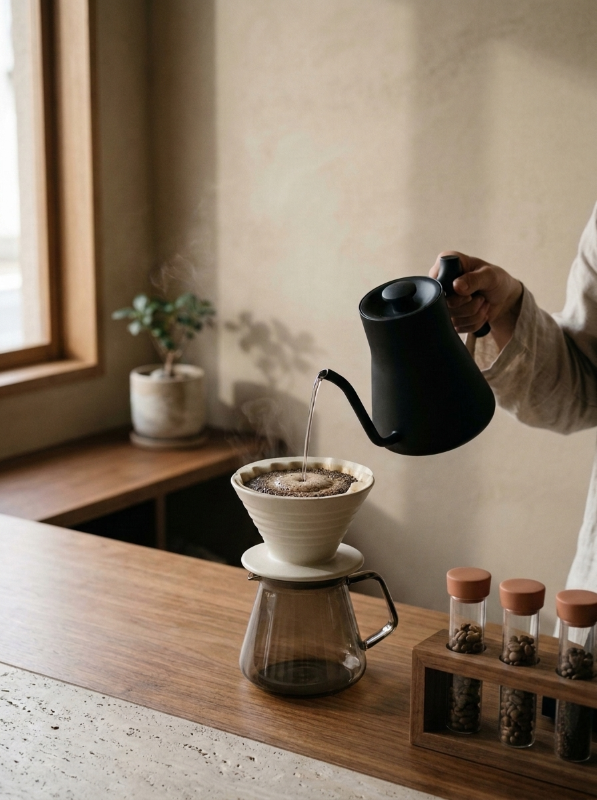

El copiloto artesanal e instrumental para el café de especialidad: cava criogénica, calibración física en micras, IA barista, balanza Bluetooth y etiquetas NFC en una sola experiencia móvil.
01 · Propósito y Norte de Producto
BeanTag nace para unir dos mundos que suelen vivir separados: la calidez estética de las barras de especialidad de Tokio, Copenhague y Melbourne, y la exactitud científica de la extracción (micrones, caudal, ratios solubles, desgasificación y congelación criogénica).
Ves tus lotes, días de reposo y cafés en pico hoy sin ruido visual ni muros.
Acercas el iPhone al frasco o sacas foto a una bolsa nueva para calibrar al vuelo.
Cronómetro guiado con balanza Timemore Dot BLE, válvulas y alertas táctiles.
Marcas ácido, bien o amargo y la próxima taza queda recalibrada automáticamente.
Sincroniza 8 molinos de gama alta en micrones D50, controla ratios por tazas (200 ml) o manual con alerta de bypass, y registra cada ajuste en segundos.
Organiza bolsas y portatubos numerados a -18°C, monitorea curvas de desgasificación de CO₂ por nivel de tueste y sabe exactamente qué abrir o congelar hoy.
Cualquier cliente escanea el tag NFC de un frasco y ve la ficha técnica pública sin muro de login, lista para compartir en Instagram Stories con estética boutique.
02 · Brand Mark & Dirección Artística 2027/2028
El isotipo BeanTag 2028 fusiona un grano de especialidad inclinado a -28° con el ojal táctil de una etiqueta física y un punto de lectura NFC. Todo el lenguaje visual elimina la fatiga de bordes y cede el color al café.
--bg → --surface → --fill) sin doble hairline.9999px.
Erradicamos emojis Unicode de toda la interfaz interactiva en favor de lucide-react y 13 iconos SVG artesanales en CoffeeIcons.jsx:
Regla de marca: respetar 15% de margen libre alrededor del isotipo, mantener rotación exacta de -28° y nunca usar transparencia en el icono iOS.
03 · Colección Cromática & Editorial
Cada usuario personaliza su barra con paletas inspiradas en cerámica, botánica japonesa y cafés nocturnos — todas con contraste WCAG AA y toggle instantáneo a Modo Barra OLED durante la extracción.
#000000 con acento cobre #E68A45 · ideal para pantallas OLED y barra nocturna.
04 · Ecosistema Funcional Completo
Control dual de bolsas en gramos y portatubos numerados (-18°C). Calcula curvas de desgasificación por nivel de tueste y resalta en 1 toque qué lotes están en pico hoy o conviene congelar. Buscador y filtros plegados para priorizar tus cafés.
Tarjeta con aura de tueste, grilla técnica limpia, notas SCA a color real y barra visual de stock. Sincroniza 8 molinos (J-Max, K-Ultra, Ode Gen 2, C40, Femobook A2, Kingrinder K6, Timemore, Baratza), selector rápido 1–3 tazas (200 ml) y alerta automática de Bypass.
Escanea cualquier bolsa con la cámara (OCR), optimiza la dosis al mínimo consumo y entrega preparación Antes de 0:00 + pasos detallados por método (émbolo, válvula, costra). Incluye ajuste rápido post-taza, Cronómetro guiado, guardado directo a Bitácora y Guardar café + receta en 1 toque.
Conexión Bluetooth CoreBluetooth elevada a Context global (cero reconexiones entre vistas, pill de peso en vivo en el header). Auto-start al verter, sincronización de pasos por peso, caudal en g/s, alertas audio/hápticas, voz opcional, controles ≥44px y toggle Modo Barra OLED.
Al cerrar el cronómetro con 1 tap (Ácido / Bien / Amargo), el motor detecta sub/sobre-extracción y canalización, guarda la nueva molienda y temperatura y las deja precargadas para tu próxima taza (con botón Revertir). Cada entrada de Bitácora incluye botón Repetir.
Acceso público inmediato a /batch/:id sin login para invitados de cafetería. Esquema nativo beantag://batch/<id> en Info.plist y SceneDelegate.swift con preferencia opcional Abrir siempre automáticamente en la app instalada por Sideloadly.
05 · Base Técnica & Gobierno del Proyecto
Un stack rápido, auditable y sin bloqueos propietarios, respaldado por un Comité Multidisciplinario de 6 subagentes permanentes consolidado tras 12 auditorías especializadas.
“La física manda: ninguna receta bonita sirve si desborda la cámara o sugiere una molienda imposible.”
Aportes: límites físicos de cámara + Bypass automático, bloque Antes de 0:00, técnica por paso, calibración en micras de 8 molinos y detección de canalización.
“Cada píxel debe oler a bolsa de especialidad de Tokio o Copenhague, nunca a software corporativo.”
Aportes: isotipo 2028 (-28°), 13 iconos SVG propios, 17 temas de especialidad, tarjetas Kissa / Cerámica / Botánico, notas SCA a color real y auras de tueste.
“Elevación tonal antes que bordes; tipografía variable y cifras tabulares antes que cajas anidadas.”
Aportes: unificación Full-Pill, limpieza de colisiones CSS, eje óptico opsz, eliminación de glows hardcodeados y steppers compactos [ − | + ].
“A las 7:30 AM con manos mojadas, cada toque y cada píxel de scroll innecesario es fricción.”
Aportes: -230 px antes del CTA en Ficha, CTA sticky al pulgar, BLE global sin reconexiones, botones ≥44 px en barra, Repetir en Bitácora y filtros colapsados.
“Escanear un frasco ajeno debe abrir una carta impecable, jamás un muro de inicio de sesión.”
Aportes: acceso público directo a /batch/:id, vista de solo lectura limpia y puente beantag:// en Safari iOS sin afectar a invitados ni a otros tags NFC.
“El código mínimo que resuelve el problema real, verificado por scripts y blindado en iOS WebKit.”
Aportes: cascada Gemini + Groq, createPortal para sticky bars en Safari iOS, toggles React determinísticos, CI Node 24 para .ipa y endpoint atómico /api/quick-recipes.
06 · Evolución Estratégica 2027 / 2028
Cuatro horizontes progresivos diseñados para escalar BeanTag desde un compañero personal de precisión hacia el estándar de barra para baristas, tostadores y cafeterías de especialidad.
g) y caudal (g/s) durante el vertido y guardar la curva en cada registro de la Bitácora.https:// abra BeanTag directo en 0.2s sin pasar por Safari.07 · Estándar de Ejecución Continua
Toda nueva mejora o corrección sigue un ciclo disciplinado de 5 fases para garantizar velocidad sin romper la experiencia en iPhone ni la consistencia de marca.
./deploy.sh.createPortal(..., document.body) si hay ancestros con transform.<details> nativo dentro de <form> en Safari iOS..bt-stepper-pill..ipa solo si cambia frontend/ios/.github.com/zebas-hidalgo/BeanTag · Documentación viva en docs/BEANTAG_MASTER_BRIEF.md, DESIGN.md y PRODUCT.md.